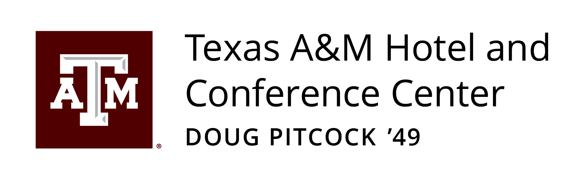
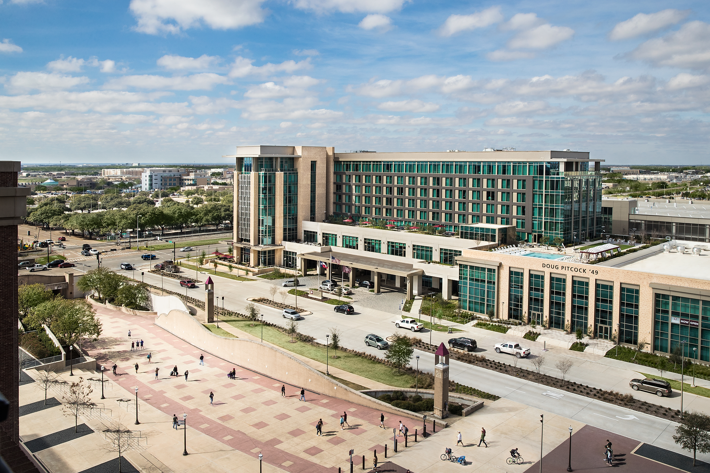

Kickoff Miles Super Pick · Sponsored Partner

STAY JUST 96 YARDS FROM KYLE FIELD
Stay at the only hotel on the Texas A&M campus, just steps from Kyle Field. Enjoy upscale accommodations, convenient on-site parking, and the option to enhance your stay with a Gameday Hullabaloo Experience pass featuring unlimited game day dining, live music, and more.
BOOK NOW